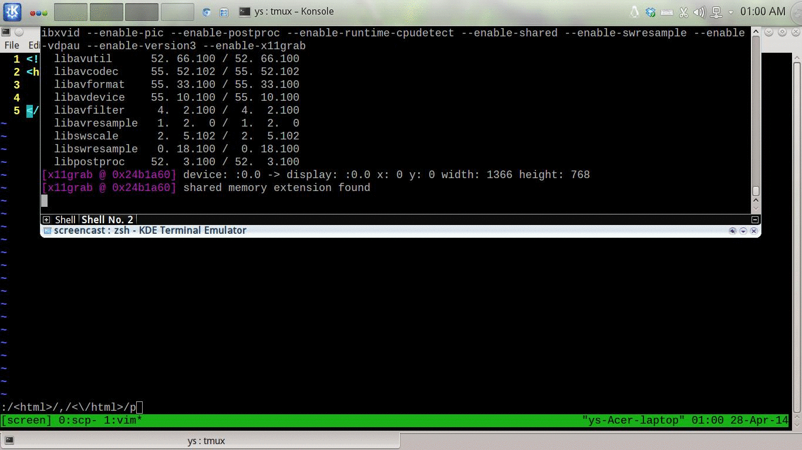

Tip 28: Execute a Command on One or More Consecutive Lines
Return to the top: <<Practical Vim>>
Try replacing :print in the following examples with :delete/:join/:substitute/:normal.
:p is short for :print
Use Line Numbers as an Address
Example:

Specify a Range of Lines by Address
-
:{start},{end}: specify a range -
.: the current line -
%: all the lines in the current file
Example:

Specify a Range of Lines by Visual Selection
-
'<: the first line of the visual selection -
'>: the last line of the visual selection
Example:

Specify a Range of Lines by Patterns
Example: 
Modify an Address Using an Offset
Example:

| Symbol | Address |
| 1 | First line of the file |
| $ | Last line of the file |
| 0 | Virtual line above first line of the file |
| . | Line where the cursor is placed |
| 'm |
Line containing mark m
|
| '< | Start of visual selection |
| '> | End of visual selection |
| % |
The entire file (shorthand for :1,$)
|